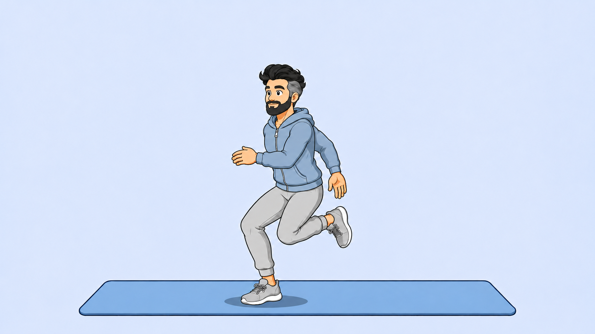
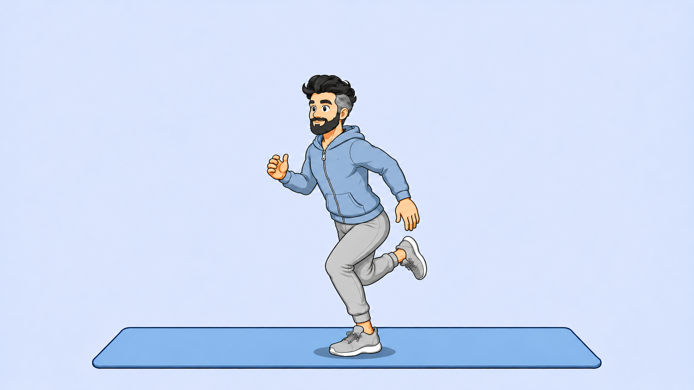

Relatio reference
The reference shows repeated knee-drive hops on one working leg. The planned Coach video will show both sides in one fixed view.
COGITO · 26 November 2026
Work in progress — Coach video not ready.
This page shows the Relatio reference and corrected starting-pose illustrations. A finished movement video is not available yet.
Planned set: five hops on each side, with light clothing and a circular countdown in the finished video.
The reference shows repeated knee-drive hops on one working leg. The planned Coach video will show both sides in one fixed view.
Still illustrations only; these do not demonstrate the complete movement.

